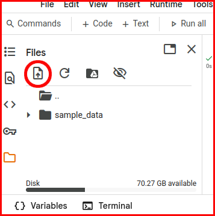

Reading and writing files#
Learning Objectives:#
Reading and writing files.
Built in functions
open()andwrite()Numpy’s
np.loadtxt()andnp.savetxt()
Overview#
Colab is a web-based cloud-service hosted by Google accessible via a web-browser. Therefore, any files you would like to read needs to be uploaded to Colab workspace of your session. Files you create or write to are stored on your workspace of your Colab session. Those files are only temporarily stored. If you close your session (e.g. closing browser tab), all your data and files will be lost.
Uploading and downloading local files#
To uploaded and download local files you can click on the folder on the left hand side. This is the workspace of your Colab session.

Select the “upload” option (circled icon) and chose the files you would like to upload. If you right click or select the 3 vertical dots next to the file, you will be able to download the file.
At the bottom left you can also see an icon “{} Variables”, which shows your, and an “Terminal” icon, which will open a Linux terminal. The “Variables” can be very useful, when you debug your code.
Reading and writing text files#
Python provides built-in functions for creating, writing, and reading files.
Creating a new files#
To create a new file in Python, the function open() is used with one of the following parameters:
'w'- writes - :open('myfile.txt', 'w')will create a new file if the specified file does not exists or overwrite an existing file.'a'- append - :open('myfile.txt', 'a')will create a new file if the specified file does not exists or append to an existing file.'x'- create - :open('myfile.txt', 'x')will create a new file or returns an error if the file exists.
Note: files are temporarily created and written to your Colab session. They will be lost, if you close the session.
Reading a file line by line#
To open a file in read only the parameter 'r' is used with the function open().
#uploads the file to your Colab session
!wget https://raw.githubusercontent.com/jbestenlehner/mat1820_example/refs/heads/main/data/somefile.txt
file = open('somefile.txt', 'r')
This creates an iterable object and we can read in the file line by line with a loop:
for line in file: # reads the file line by line
print(line) # prints each line
file.close() # closes the file
The \n at the end of the line indicates a new line as discussed in the previous tutorial in session 4.
The following example shows how to read file, creates list of its content and converts the list into a numpy array. The example uses the function .strip() which returns a copy of the string with leading and trailing whitespace removed including new line (\n) and the function .split(), which returns a list of the substrings in the string, using sep as the separator string. If no separator string is given, the string will split on any white space character including new line (\n) and tab (\t).
import numpy as np
file = open('somefile.txt', 'r') # opens file in read-only.
data = [] # creates and empty list
for line in file: # reads the file line by line
line = line.strip() # strips leading and trailing whitespace
line = line.split() # splits the string into substrings at each white space
data.append(line) # appends the list line to the list data
data = np.array(data) # converts list to numpy array
print(data.shape) # shape of array in lines and columns
print(data)
Note: .split() is used for data that has been intentionally delimited (structured data).
Writing to a file#
Before we can write into a file we need to create it first, e.g. open('myfile.txt', 'w') (see creating a new file).
file = open('myfile.txt', 'w') # creates a new file called myfile.txt or overwrites it, if it already exists.
for i in range(1,4): # produces range 1, 2, 3
a_string = (f'Line {i+1:.0f}\n') # creates a string and formats indexes i into string
file.write(a_string) # writes string into file
file.close() # closes the file
Note: '\n' (new line) needs to be added at the end of the string. Unlike print() the .write() function does not add by default a \n to the end of the string. If \n is not added, all strings will be written into the same line.
Warning
File must be closed after writing the data, e.g. file.close(). If the file is not closed properly, not all data might be written to the file.
Numpy: reading and writing text files#
Structured data generally refer to formats that store data in an organized and consistent way making it easier to read and manipulate.
Reading text files#
The numpy function np.loadtxt() is usually used to read in numerical data of data type int or float, while float is the default data type (dtype).
!wget https://raw.githubusercontent.com/jbestenlehner/mat1820_example/refs/heads/main/data/some_data.txt
a = np.loadtxt('some_data.txt') # reads the entire content of the file into an numpy.array of dtype = float.
b = np.loadtxt('some_data.txt', dtype = int) # reads data into a numpy.array of dtype = int
c = np.loadtxt('some_data.txt', dtype = str) # reads data into a numpy.array of dtype = str
The delimiter parameter tells np.loadtxt(), which character separates the data. Input is str, e.g. ',' or '|'. Default is whitespace.
In cases, where you do not need all columns, you can select columns with the usecols= parameter. Input can be an integer or a sequence (0, 2, 4).
Note: Python starts counting at 0.
d = np.loadtxt('some_data.txt', usecols=(0,3)) # reads in 1st and 4th column
column_2, column_3 = np.loadtxt('some_data.txt', usecols=(1,2), unpack=True) # reads in 2nd and 3rd column into 1D arrays
The unpack=True parameters unpacks the array into individual columns. Therefore, you need to know, how many columns do you unpack.
Some files have comments at the start of the file. The usual convention is that file comments or headers start with '#' (default). Input to the comments parameter are str or sequence of str. Alternatively you can use the parameter skiprows with an integer input.
e = np.loadtxt('some_data.txt', usecols=4, delimiter=' ', comments=':', skiprows = 2, unpack=True)
Summary of optional parameters to np.loadtxt():
dtype:
int,float(default),stror (complex)delimiter:
strusecols:
intor sequence ofintcomments:
stror sequence ofstr(default'#')skiprows:
intunpack:
bool(defaultFalse)
There are more options available, which can be accessed with np.loadtxt? or help(np.loadtxt).
Writing text files#
To save data in a text file numpy provides the np.savetxt() function.
a = np.random(10,5)*10 # generate random numbers between 0 and 10 excluding 10, [0, 10), in 10 row times 5 column matrix.
np.savetxt('save_some_data.txt', a) # writes array a into a file
It can save 1D or 2D (our example) array. If you hae multiple arrays you would like to save into one file you need to concatenate them first, e.g. np.concatenate(), np.column_stack(), np.row_stack(), etc.
Of course, you can format your data with the fmt parameter.
np.savetxt('save_some_data.txt', a, fmt='%10.5f') # all columns are formatted the same
np.savetxt('save_some_data.txt', a, fmt='%8.2f %5.2f %7.3f %3.0f %10.2e') # or individually
Note: You need to use % instead of :.
Other optional parameters are:
delimiter:
strheader:
strcomments:
str
A full list of parameters can be accessed with np.savetxt? or help(np.savetxt).